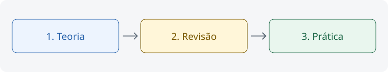

Teoria em primeiro lugar
Este é um modelo de componentes. Use negrito para os termos principais e parágrafos curtos para facilitar a leitura.

CICLO DE ESTUDO
- Compreender
Leia a teoria.
- Revisar
Retome os pontos-chave.
- Praticar
Resolva e corrija questões.
| Material | Ação | Cor |
|---|---|---|
| Questões e simulados | Praticar | Verde |
| Teoria | Compreender | Azul |
| Resumos e mapas | Revisar | Amarelo |
| Legislação | Consultar | Roxo |
Como usar as seções retráteis
Abra esta seção por clique ou pelo teclado com Enter ou Espaço. O componente usa o elemento HTML details.